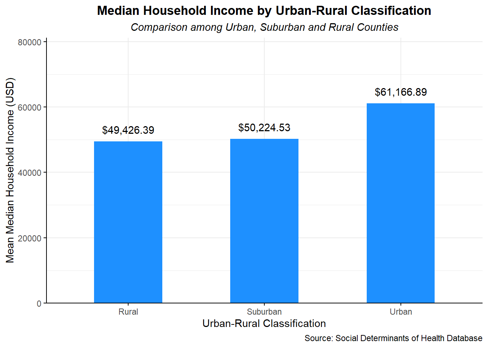

library(readxl)
library(tidyverse)
library(ggplot2)
library(sf)
library(tigris)
library(gridExtra)
# Load in the data
df_2020 <- read_excel("SDOH_2020_COUNTY_1_0.xlsx", sheet = 2)
# Drop the unnecessary variables
df_2020 <- df_2020 |>
rename(county_fips = COUNTYFIPS,
urindex = AHRF_USDA_RUCC_2013,
inc = ACS_MEDIAN_HH_INC,
uer = AHRF_UNEMPLOYED_RATE,
age = ACS_MEDIAN_AGE
) |>
select(county_fips, urindex, inc, uer, age)Gaps of General Family Income of Counties in America and Potential Reasons
Policy Question
Family income has long been a topic that both government and citizens emphasize a lot. And the median household income of one county can be an important indicator for the county’s economic performance and the life quality of people living in that county.
Therefore, our policy question is on the median household income among different counties in U.S. We want to see whether there is gaps or disparities among the median household income of counties in the U.S. We then would propose some reasons we think might be contributing to the uneven distribution of the general family income of different counties, and use data visualization to verify our assumption.
Data Cleaning
The data come from SDOH, Social Determinants of Health Database. We selected and renamed the main variables from the original data base.
Geographic Distribution of Median Income by County in 2020
# Get the county shape data
counties <- counties(cb = TRUE, resolution = "20m",
progress_bar = FALSE)
# Merge the county shapefile data with df_2020 using FIPS code
df_2020_sf <- counties |>
left_join(df_2020, by = c("GEOID" = "county_fips"))
df_2020_sf <- st_transform(df_2020_sf, 4326)
# Create a map of median income by county in 2020
map_inc <-
ggplot(data = df_2020_sf) +
geom_sf(
aes(fill = inc),
color = "white",
size = 0.1) +
scale_fill_gradient(
low = "azure2",
high = "dodgerblue4",
name = "Median Income(USD)",
na.value = "white") +
labs(title = "Median Household Income by County in the U.S. (2020)",
subtitle = "Median household income (dollars, inflation-adjusted to data file year)",
caption = "Source: Social Determinants of Health Database") +
theme_minimal() +
theme(
axis.text = element_blank(),
axis.ticks = element_blank(),
panel.grid = element_blank(),
plot.title = element_text(hjust = 0.5, face = "bold"),
plot.subtitle = element_text(hjust = 0.5, face = "italic")) +
coord_sf(xlim = c(-125, -66), ylim = c(24, 50))
# Print the maps
map_incThis graph illustrates the income levels across various counties in the United States. The color intensity in each county represents the level of the median household income (inflation adjusted): the thicker the blue is, the higher the income is.
The picture reveals income disparities across different regions in the United States. Coastal counties generally being wealthier than those inland. The richest areas are found along the northeastern and southwestern coasts, while the southeastern region appears to be the poorest. Additionally, compared with the eastern part of U.S., the western part has larger counties, and the distribution of household income seems more uniform compared to the eastern region.
Income Disparities over Regions (Urben v.s. Rural)
# Generate mean income by urindex
df_2020_ur <- df_2020 |>
filter(!is.na(urindex), !is.na(inc))
# Create a new classification with 3 classes (Urban, Suburban, Rural)
df_2020_ur <- df_2020_ur |>
mutate(ur_class = case_when(
urindex %in% 1:3 ~ "Urban",
urindex %in% 4:6 ~ "Suburban",
urindex %in% 7:9 ~ "Rural"
))
# Calculate mean income by ur_class
df_2020_ur <- df_2020_ur |>
group_by(ur_class) |>
summarize(mean_inc = mean(inc))
# Create the bar chart
bar_inc_ur <-
ggplot(data = df_2020_ur, aes(x = ur_class, y = mean_inc)) +
geom_col(fill = "dodgerblue", width = 0.5) +
geom_text(aes(label = scales::dollar(mean_inc), vjust = -1)) +
labs(
title = "Median Household Income by Urban-Rural Classification",
subtitle = "Comparison among Urban, Suburban and Rural Counties",
x = "Urban-Rural Classification",
y = "Mean Median Household Income (USD)",
caption = "Source: Social Determinants of Health Database"
) +
scale_y_continuous(
limits = c(0, max(df_2020_ur$mean_inc) + 20000),
expand = c(0, 0)
) +
theme_minimal() +
theme(
plot.title = element_text(hjust = 0.5, face = "bold"),
plot.subtitle = element_text(hjust = 0.5, face = "italic"),
axis.line = element_line(color = "black"),
axis.ticks = element_line(color = "black")
)
# Print the bar chart
bar_inc_ur
This graph shows household income levels across counties categorized by different levels of urbanization. Using the Urban-Rural Commuting Area code, we divided all U.S. counties into three categories: Urban, Suburban, and Rural. The height of each bar represents the average county median household income for each category.
The graph indicates that urbanization significantly affects household income. The average county-level median household income for “Urban” counties is 60,000, which is notably higher than the 50,000 average for “Rural” counties. However, there is no significant difference between the average incomes of “Suburban” and “Rural” counties.
Relationship Between Income and Unemployment Rate
# Divide Median HH Income by quantiles
df_2020_inclevel <- df_2020 |>
filter(is.na(inc) == FALSE) |>
mutate(medin_25 = quantile(inc, probs = 0.25),
medin_50 = quantile(inc, probs = 0.50),
medin_75 = quantile(inc, probs = 0.75)) |>
mutate(inclevel = case_when(
inc >= medin_75 ~ "4th",
medin_50 <= inc & inc < medin_75 ~ "3rd",
medin_25 <= inc & inc < medin_50 ~ "2nd",
inc < medin_25 ~ "1st"
))
# Create a scatter plot showing relationship between inc and uer
# Use different colors for different quantile of Median HH Income
ggplot(data = df_2020_inclevel) +
geom_point(
aes(x = uer, y = inc, color = inclevel),
alpha = 0.5,
size = 0.5) +
geom_smooth(
aes(x= uer, y = inc),
method = "lm",
alpha = 0.8,
color = "black"
) +
scale_color_manual(
name = "Quantile of \n Median HH Income",
values = c("1st" = "turquoise1", "2nd" = "turquoise2",
"3rd" = "turquoise3", "4th" = "turquoise4"),
labels = c("1st" = "1st quantile", "2nd" = "2nd quantile",
"3rd" = "3rd quantile", "4th" = "4th quantile"),
)+
labs(title = "Scatter Plot of Income vs. Unemployment Rate by County",
subtitle = "Umployment rate per 100 population, age 16+",
x = "Unemployment Rate (%)",
y = "Median Household Income (USD)",
caption = "Source: Social Determinants of Health Database") +
theme_minimal() +
theme(
panel.background = element_rect(fill = "white", color = NA),
plot.title = element_text(hjust = 0.5, face = "bold"),
plot.subtitle = element_text(hjust = 0.5, face = "italic"),
axis.line = element_line(color = "black"),
axis.ticks = element_line(color = "black")
)This graph provides insights into the distribution of county-level median household incomes and unemployment rates across U.S. counties. Most counties have median household incomes between 30,000 and 75,000, while the general unemployment rate ranges from 2.5% to 7%.
Furthermore, the graph suggests a rough relationship between household income and unemployment rates. Generally, counties with higher median incomes tend to have lower unemployment rates, which aligns with the expectation that areas with fewer unemployed individuals tend to have better income levels. However, this relationship is not very strong, as indicated by the small negative slope in the graph.
Relationship Between Age and Income
# Create bins for median age (bins of 2-year intervals)
df_binned <- df_2020 |>
filter(!is.na(age)) |>
mutate(
age_bin =
cut(age,
breaks = seq(min(age), max(age), by = 2),
include.lowest = TRUE)) |>
group_by(age_bin) |>
# Calculate mean income per bin
summarize(mean_income = mean(inc, na.rm = TRUE),
median_age = mean(age, na.rm = TRUE))
# Create the line chart using the binned data
ggplot(data = df_binned, aes(x = median_age, y = mean_income, group = 1)) +
geom_line(color = "dodgerblue4", size = 1) +
geom_point(color = "azure4", size = 2) +
labs(
title = "Relationship between Median Age and Median Income by County",
subtitle = "Average household income across U.S. counties, grouped by binned median age intervals.",
x = "Age",
y = "Mean Median Household Income (USD)",
caption = "Source: Social Determinants of Health Database"
) +
theme_minimal() +
theme(
plot.title = element_text(hjust = 0.5, face = "bold"),
plot.subtitle = element_text(hjust = 0.5, face = "italic"),
axis.text.x = element_text(hjust = 0.5),
axis.text.y = element_text(hjust = 0.5)
)This graph showed that one of the factors contributing to the differences among county level median incomes might be the age structure of citizens living in this country. 25 years old as the county’s median age seems to be a point where median household income increases significantly. Among counties where the median age is below 37-38 years old, the median household income goes up very fast with the increase in the median age. After 38, the median household income would decrease with the age increase, yet it would reach a rather stable status after the median age has reached 45 years old.
This indicates that from the family income perspective, the places where the median age is between 30 and 40 tends to have the best performance and is the idea age structure for the economic well-being of the county. Places where the median age is below 25 might lag in median household income because children do not have the ability to work and young workers also generally have a rather low salary, where places the median age is above 45 might experience the problem of aging population.
However, we also see a sharp increase of median household income among counties where the median age is above 70. The reason for this might be that counties with an extremely high median age might also have good medical resources and outstanding living conditions, which explains their general high family incomes.